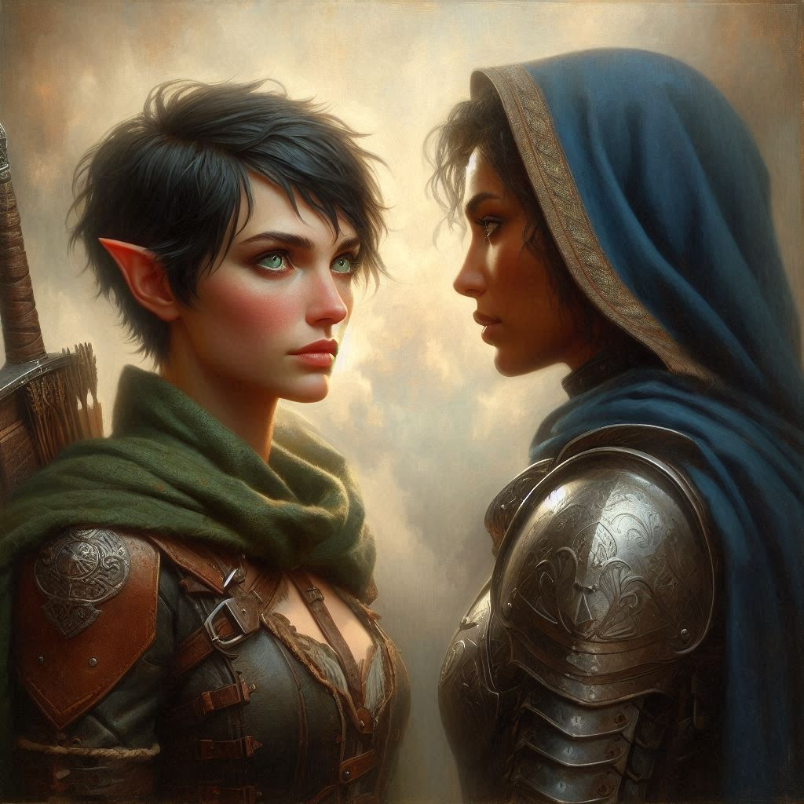
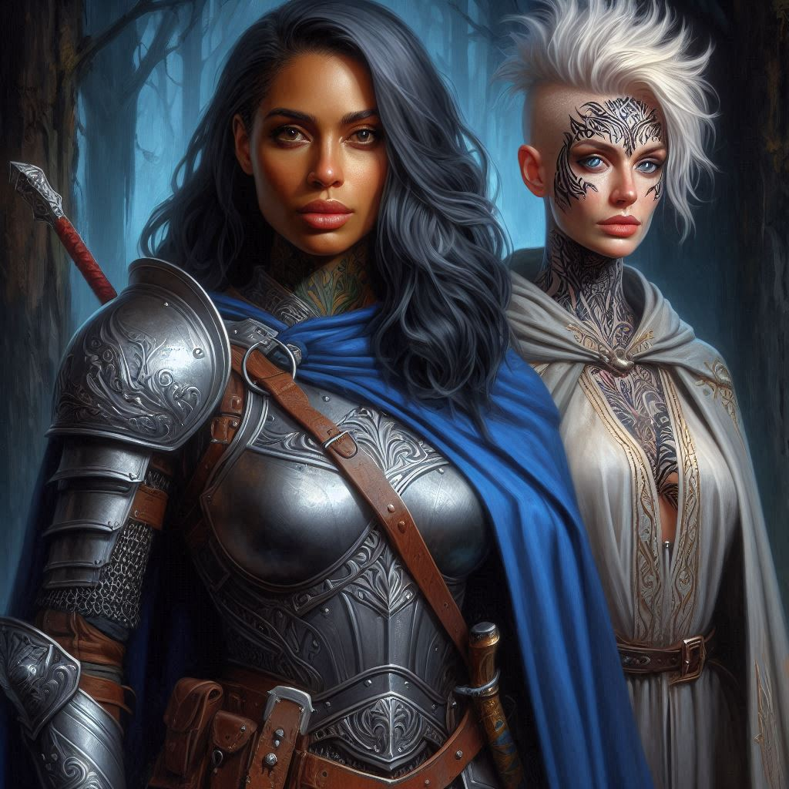

By Royal Command
The afternoon sun begins its descent, casting the Ministry of Trade in long shadows as you slip out, your mind reeling from what you’ve just learned. Varis, the Minister of Trade, is no mere politician. He’s a dark elf, an agent of the Shadow Realm, planning to unleash an army of dark elves through a portal deep within Hemlock Caverns. The stakes are far greater than you imagined, and Jorsh's involvement now seems only a small piece of a much darker, more sinister puzzle.
As you exit into the cool air, you take a deep breath, steadying yourself. There’s no turning back. You pull a small slip of parchment from your pocket and unfold it—the coded instructions you received from a mysterious ally within the royal court. You know you need answers, and Liora, the advisor to Princess Hawthorn, is your best lead.
You travel through the bustling streets of Belladonna, your hood pulled low, blending into the crowd. At last, you arrive at a secluded spot near the edge of town, where an old stone well stands. You look around, making sure no one is watching, before you drop a silver coin into the well—a signal for Liora.
Minutes pass before you hear the sound of hooves approaching. Liora emerges from the shadows, riding a midnight-black horse. Her eyes meet yours, and without a word, she tosses a second horse's reins toward you. You mount quickly, your heart pounding.
“Come with me,” she says, her voice low but firm. “The princess is waiting.”
Without hesitation, you follow her out of Belladonna, the two of you galloping through winding forest trails. The trees blur around you, and the cool wind whips through your hair as the weight of your choices presses on your mind. You can't help but wonder why Princess Hawthorn herself is involved in this mission, and why she’s been watching your every move.
As dusk settles, you arrive at a hidden camp nestled in Hemlock Pass. A cluster of tents lies in the clearing, and guards in royal armor stand watch. At the center of the camp, sitting before a crackling fire, is Princess Hawthorn. She’s younger than you expected, perhaps only a few years older than yourself, yet there is a commanding presence in the way she sits—poised, confident, regal.
Liora dismounts first and gestures for you to follow suit. As you approach the princess, she rises, her gaze sharp, taking in every detail about you. The air feels heavy, as if every word exchanged here could change the course of your life.
"Kira Coldspring," Hawthorn says, her voice carrying the weight of authority. "I’ve heard much about you."
You bow slightly, unsure how to respond to royalty, especially one who seems to know so much about you.
Princess Hawthorn continues, her eyes never leaving yours. "I’m sure by now you’ve uncovered the truth about Varis, and the threat he poses not only to Belladonna but to the entire Kingdom of Yew. He seeks to open a portal to the Shadow Realm, and if he succeeds, none of us will survive the coming invasion. That is why I brought you here."
You swallow hard, glancing briefly at Liora, who stands nearby, her face unreadable.
"Your magistrate didn’t act on his own," the princess says, stepping closer. "I gave the order to apprehend Jorsh. He’s tied to this in ways you may not yet understand. I sent you after him, hoping you’d bring him to me—alive." She pauses, letting the words sink in. "Because I need you for more than just that."
Your stomach twists as the weight of her words settles over you. You were never just chasing Jorsh; you were being used. But to what end?
"Jorsh was my father's apprentice," Hawthorn continues, her voice softening slightly. "He was once loyal to this kingdom, but now he seeks a power hidden deep within Hemlock Caverns—a power I need for myself. My family...we need that treasure to stop Varis. And so do you."
Confusion fills your thoughts. "What do you mean?" you ask, your voice low. "Why me?"
The princess’s eyes harden. "Because Jorsh won’t trust anyone else. Not after everything you two have shared."
The mention of your history with Jorsh sends a pang through your chest. Old memories surface—his laughter, his touch, the way he vanished without a word. You clench your fists at your sides, the conflict within you brewing once again. You wonder how the princess of Yew would know or care about your past with Jorsh.
"You’re the key to this," Hawthorn continues, her tone soft but firm. "You can bring him to me, but more than that, I need you to help me claim the treasure of Hemlock Caverns before Varis can. With it, we stand a chance against his dark army. Without it, our kingdom is lost."
You feel your heart race, torn between loyalty, duty, and the unresolved feelings that swirl inside you. If you follow the princess, you’ll be aiding in her quest for power, but perhaps stopping Varis in the process. If you refuse, you risk not only the wrath of the royal family but the future of Yew itself.
"Kira," Princess Hawthorn says, her voice dropping to a near whisper, "I’m invoking my royal authority. I command you to join me on this quest. Together, we can stop Varis and save Yew. If you obey my command, it will just be the two of us from here on out. I trust no one else. But you must choose now."
The fire crackles between you, casting long shadows on the forest floor as her words echo in your mind. You glance at Liora, her expression unreadable but expectant, and then back at the princess.